Storie e aneddoti di Castel Gandolfo.
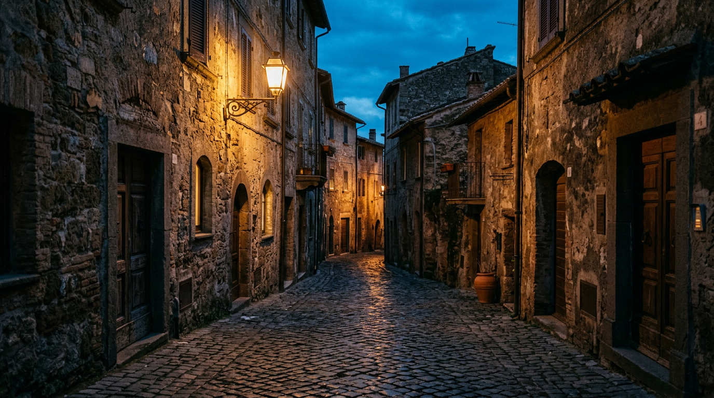
Ogni luogo ha le sue leggende. Castel Gandolfo ne ha di documentate: episodi che i visitatori raramente conoscono ma che spiegano perché questa collina, per duemila anni, sia stata considerata più importante di quanto la sua dimensione suggerisca. Racconti scelti con le loro fonti a portata di link.
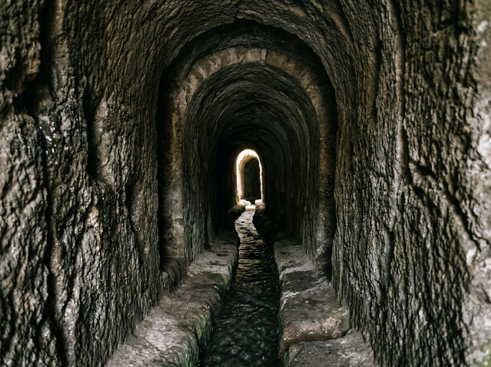
L'emissario romano che scavò il tufo.
Un tunnel di 1.450 metri scavato manualmente nel tufo vulcanico per regolare il livello del lago Albano, con pendenza millimetrica che ancora oggi gli ingegneri idraulici moderni studiano. È in funzione da 2.400 anni.
Nel 398 a.C., secondo le fonti antiche, gli abitanti di Alba Longa e i Romani realizzarono un'opera che ancora oggi sfida la logica dei mezzi disponibili all'epoca: un emissario sotterraneo lungo 1.450 metri scavato nel tufo del cratere per regolare il livello del lago Albano. L'opera fu attribuita a un'ispirazione oracolare: quando l'acqua del lago si era alzata minacciosamente, gli aruspici avrebbero indicato che solo il drenaggio del bacino avrebbe permesso ai Romani di conquistare Veio. L'emissario è ancora oggi funzionante ed è uno dei più antichi acquedotti sotterranei documentati del mondo antico. Il fatto che sia stato scavato manualmente nel tufo vulcanico per un chilometro e mezzo, con una precisione millimetrica di pendenza, resta un'impresa che i moderni ingegneri idraulici studiano ancora ([Parco Regionale dei Castelli Romani](https://www.parcocastelliromani.it/)).
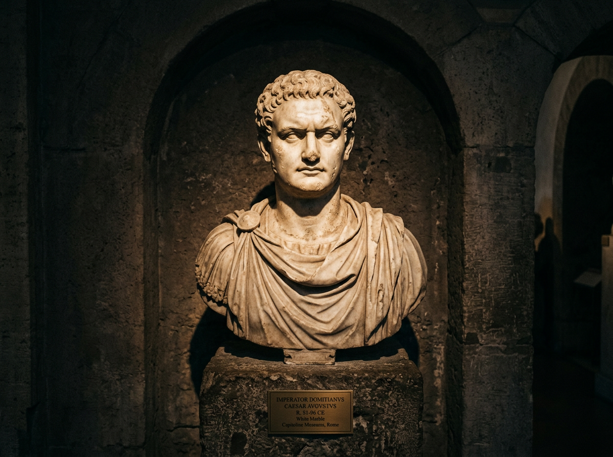
Domiziano, il "calvo Nerone".
Il poeta Giovenale lo soprannominò così. L'imperatore soggiornava tanto spesso a Castel Gandolfo che si fece rivestire di lastre di marmo pario la stanza da letto: nessuno poteva coglierlo di sorpresa.
L'imperatore Domiziano soggiornava così frequentemente nella sua residenza di Castel Gandolfo che il poeta Giovenale lo soprannominò il "calvo Nerone". La villa era attrezzata anche per la stagione invernale, con criptoportici coperti lunghi trecento metri per le passeggiate imperiali, un teatro, un ippodromo, e sontuosi ninfei affacciati sul lago. Al culmine della sua paranoia politica, l'imperatore fece rivestire di lastre di marmo pario le pareti della sua stanza da letto perché riflettessero come specchi chiunque si avvicinasse: nessuno poteva coglierlo di sorpresa. Domiziano fu assassinato nel 96 d.C. in una congiura di palazzo che coinvolse anche la sua stessa moglie ([Ville Pontificie](https://www.villepontificie.va/it/cenni-storici/castel-gandolfo)).
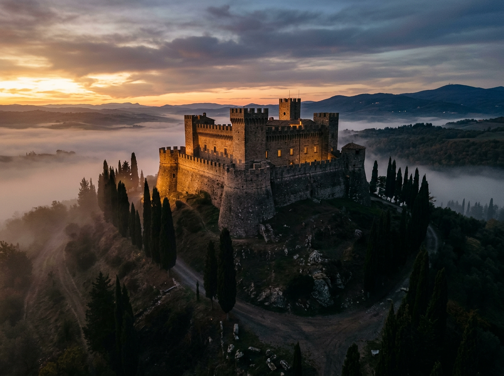
Trecento anni di sudditanza feudale.
La rocca dei Gandolfi diventa dei Savelli, che la tengono per quasi tre secoli. Nel 1596 la Camera Apostolica pignora il feudo per un debito di 150.000 scudi: da lì, per quattrocento anni, sarà residenza estiva dei Papi.
Intorno al 1200, la famiglia genovese dei Gandolfi costruì sulla collina il castello da cui il borgo prese il nome. Nel 1221 la rocca passò ai Savelli, che la tennero per quasi tre secoli con alterne fortune: nel 1436 il cardinale Vitelleschi la espugnò e la distrusse; nel 1482 Sisto IV la sottrasse temporaneamente per assegnarla a Velletri; nel 1486 tornò ai Savelli; tra il 1585 e il 1590 Sisto V la elevò a ducato per Bernardino Savelli. Ma nel luglio 1596, la Camera Apostolica pignorò il feudo perché i Savelli non avevano onorato un debito di 150.000 scudi. Nel 1604 Clemente VIII lo dichiarò patrimonio inalienabile della Santa Sede. Un feudo perso per un debito, che diventò per quattrocento anni residenza estiva dei Papi ([Wikipedia — Castel Gandolfo](https://it.wikipedia.org/wiki/Castel_Gandolfo)).
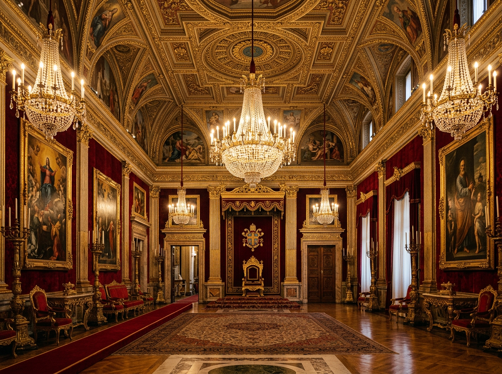
Urbano VIII, il primo Papa in villeggiatura.
Urbano VIII Barberini arriva a Castel Gandolfo nel 1626: da quel giorno, per quasi quattrocento anni, i Pontefici trascorreranno qui le estati. Una delle continuità più stabili della storia europea moderna.
Nella primavera del 1626, Urbano VIII Barberini arrivò a Castel Gandolfo per il primo soggiorno papale della storia. Aveva amato questi luoghi già da cardinale, e aveva fatto ampliare il Palazzo da Carlo Maderno. Da quel giorno di 400 anni fa e fino al 2013, con l'eccezione dei sessant'anni successivi alla presa di Roma del 1870, i Pontefici hanno trascorso qui le estati. Urbano VIII stabilì una consuetudine che sarebbe diventata tradizione: la villeggiatura del Papa a Castel Gandolfo è stata una delle continuità più stabili della storia europea moderna ([Ville Pontificie](https://www.villepontificie.va/it/cenni-storici/castel-gandolfo)).
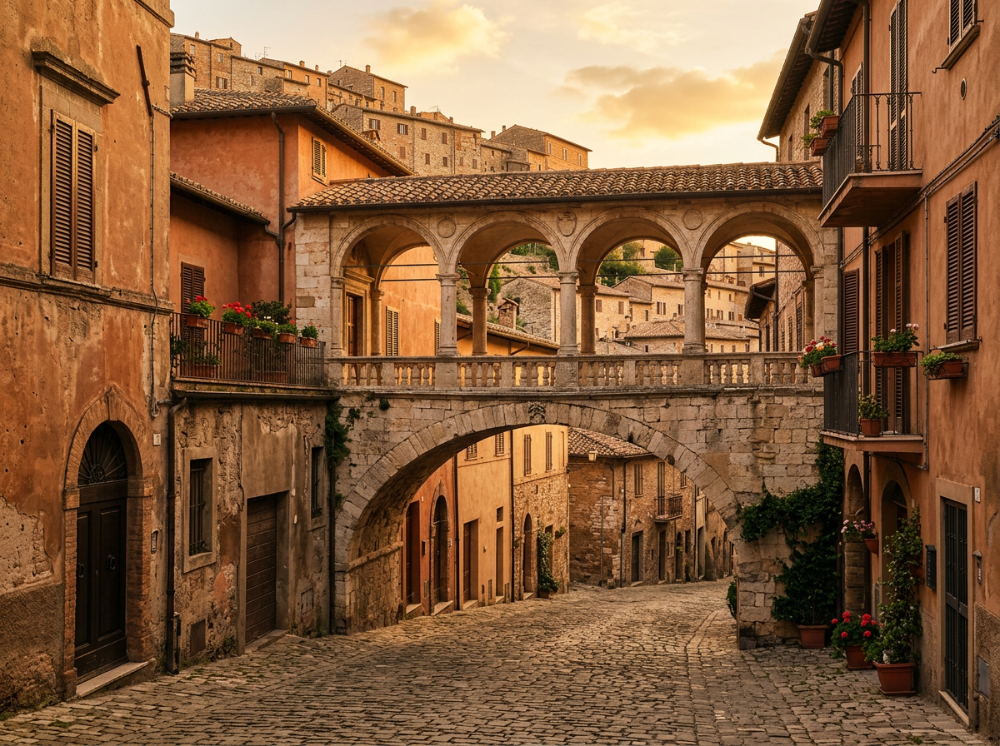
Il cavalcavia mai costruito.
Il cardinale Camillo Cybo progetta un ponte al piano nobile per collegare palazzo e giardino. Muore nel 1743 con il progetto sulla carta. La loggia sarà costruita solo dopo il 1929, oltre duecento anni dopo.
Nel 1717 il cardinale Camillo Cybo comprò la palazzina che sarebbe diventata Villa Cybo, e di fronte acquistò un terreno di tre ettari per farne un giardino con marmi, statue e fontane. Ma tra il palazzo e il giardino passava la pubblica via — la Galleria di sotto — e il cardinale progettò di collegarli con un cavalcavia all'altezza del piano nobile. Non ebbe mai il tempo o il denaro per realizzarlo, e morì nel 1743 con il progetto sulla carta. Il ponte fu costruito solo dopo il 1929, oltre duecento anni dopo: la loggia che oggi collega Villa Cybo al Palazzo Pontificio passa sopra l'antica Porta romana. Un progetto rimasto in sospeso per due secoli, poi realizzato quasi identico a come era stato pensato ([Ville Pontificie](https://www.villepontificie.va/it/cenni-storici/castel-gandolfo)).
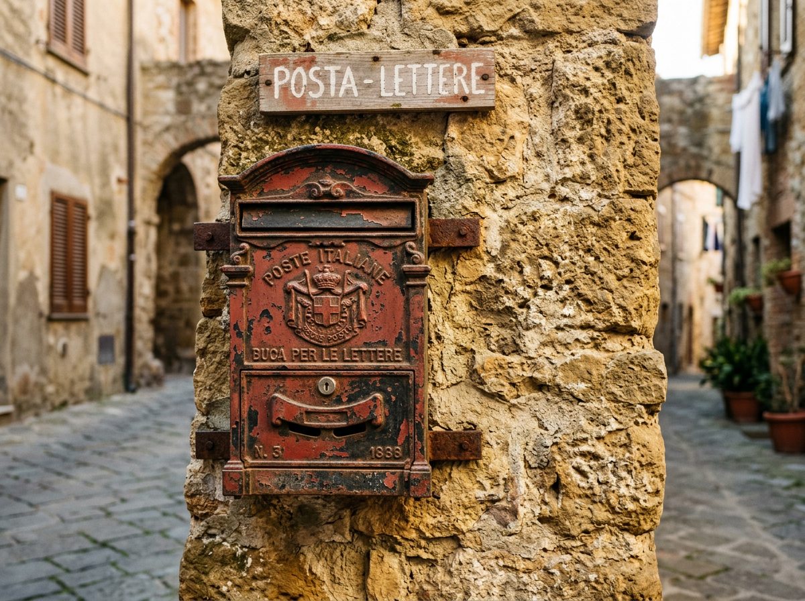
La prima cassetta postale del mondo?
Il consigliere comunale Angelo Antonio Iacorossi promosse l'installazione in piazza della Libertà di quella che la tradizione locale identifica come la prima cassetta postale al mondo. È tuttora conservata.
Il 23 novembre 1820, il consigliere comunale Angelo Antonio Iacorossi promosse l'installazione, in piazza della Libertà, di quella che la tradizione locale identifica come la prima cassetta postale al mondo. La cassetta è tuttora conservata. L'affermazione va presa con la prudenza dovuta — la storia della posta è complessa e altre città vantano primati concorrenti — ma il documento comunale è verificabile e la data è certa. Un piccolo borgo che rivendica un primato della modernità: molto castelgandolfese ([Wikipedia — Castel Gandolfo](https://it.wikipedia.org/wiki/Castel_Gandolfo)).
I Patti Lateranensi e le alternative scartate.
Durante i negoziati del 1929 si valutarono anche la Villa Farnese di Caprarola e la Villa Doria Pamphilj sul Gianicolo. La tradizione storica di Castel Gandolfo prevalse.
Durante i negoziati dei Patti Lateranensi del 1929, tra la Santa Sede e l'Italia si esaminarono anche altre destinazioni per il soggiorno estivo dei Pontefici: la Villa Farnese di Caprarola e la Villa Doria Pamphilj sul Gianicolo. Alla fine prevalse la tradizione storica di Castel Gandolfo. Se la scelta fosse caduta diversamente, il borgo pontificio sarebbe rimasto un piccolo comune dei Castelli Romani, senza le tre ville, senza l'Osservatorio, senza la centralità internazionale che ha oggi ([Ville Pontificie](https://www.villepontificie.va/it/cenni-storici/castel-gandolfo)).
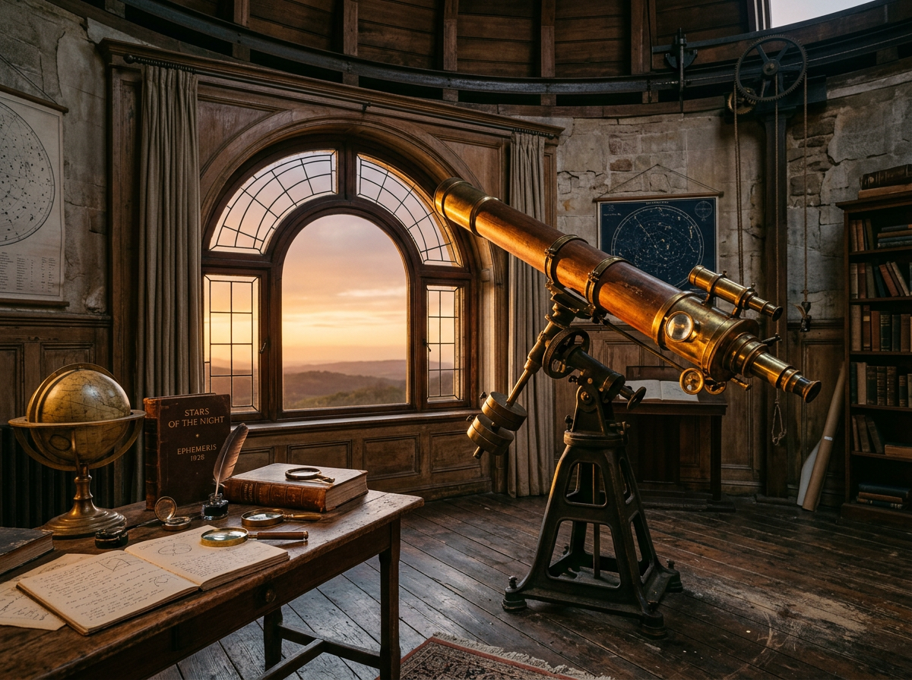
La Specola fugge il chiarore.
Nel 1934 l'Osservatorio Astronomico Vaticano lascia il Vaticano per Castel Gandolfo, in cerca del buio necessario. Sessant'anni dopo, la Specola apre una seconda sede in Arizona: la fuga dal chiarore continua.
Nel 1934 l'Osservatorio Astronomico Vaticano fu trasferito dai palazzi vaticani a Castel Gandolfo. Il motivo era prosaico: nella regione romana l'illuminazione notturna aveva ormai reso impossibile osservare la volta celeste ([Ville Pontificie](https://www.villepontificie.va/it/cenni-storici/castel-gandolfo)). Sessant'anni dopo, anche il cielo dei Castelli Romani sarebbe diventato troppo luminoso: nel 1993 la Specola aprì una sede al Monte Graham in Arizona, dove opera il Vatican Advanced Technology Telescope. Uno dei più antichi programmi di osservazione astronomica continuativa del mondo, gestito dai Padri Gesuiti, ha inseguito il buio dai palazzi papali fino al deserto americano ([Vatican Observatory](https://www.vaticanobservatory.va/en/)).
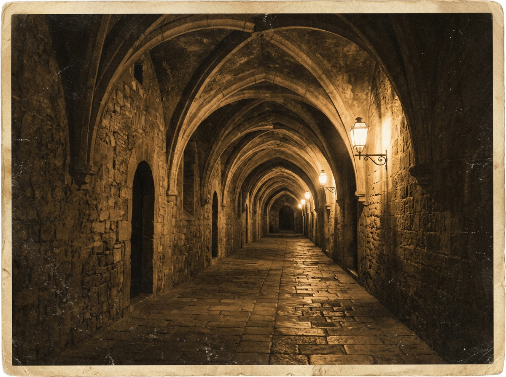
Dodicimila sfollati tra le mura pontificie.
Dopo lo sbarco alleato di Anzio del 22 gennaio 1944, i Castelli Romani si trovarono lungo la linea del fronte. Il 1º febbraio 1944 furono bombardate Albano Laziale e Ariccia; il 2 febbraio Marino; il 10 febbraio il collegio di Propaganda Fide, situato nel territorio comunale di Castel Gandolfo, fu colpito da un bombardamento anglo-americano che provocò circa 500 vittime civili. Durante il conflitto le Ville Pontificie, protette dal regime di extraterritorialità, offrirono rifugio a circa 12.000 sfollati provenienti dai Castelli Romani e dall'area di Anzio. All'interno del complesso pontificio nacquero una quarantina di bambini ([Wikipedia — Castel Gandolfo](https://it.wikipedia.org/wiki/Castel_Gandolfo)). Un palazzo estivo diventato ospedale, dormitorio, sala parto: una delle pagine meno raccontate della storia di Castel Gandolfo, e forse la più umana.
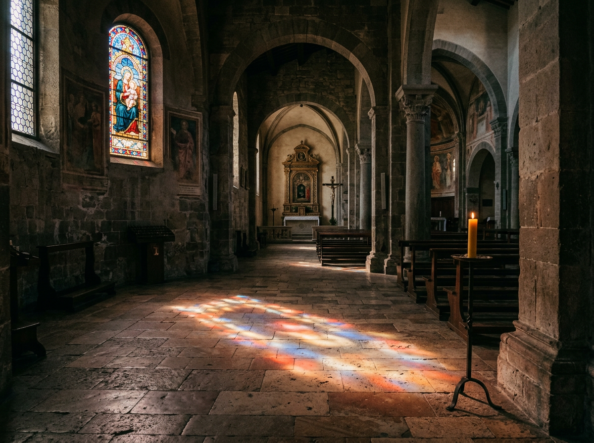
La morte di Paolo VI alle 21.40.
Paolo VI si spense a Castel Gandolfo nel luogo che aveva scelto e amato. Aveva voluto la Chiesa della Madonna del Lago, consacrata da lui stesso l'anno prima. Testamento sobrio, basso cataletto, nessuno sfarzo.
Il 6 agosto 1978, alle 21.40, Paolo VI si spense nella residenza di Castel Gandolfo per un edema polmonare. Aveva scritto il proprio testamento tredici anni prima, il 30 giugno 1965, e in esso aveva chiesto un funerale sobrio: la sua salma fu esposta a San Pietro non su un alto catafalco secondo la prassi secolare, ma su un basso cataletto, senza sfarzo. Paolo VI aveva amato profondamente Castel Gandolfo: aveva voluto la Chiesa della Madonna del Lago, consacrata da lui stesso nel 1977, e per l'Anno Santo 1975 aveva fatto costruire un'aula per le udienze nell'area di Villa Cybo. Morì nel luogo che aveva scelto ([Castelli Notizie](https://www.castellinotizie.it/2022/08/06/44-anni-fa-moriva-a-castel-gandolfo-papa-paolo-vi-il-pontefice-che-amava-i-castelli-romani/)).
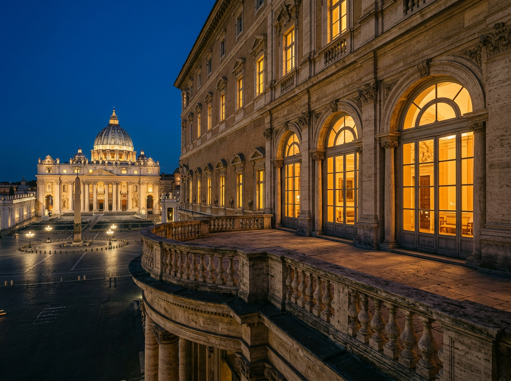
L'ultimo volo di Benedetto XVI.
Alle 17.07 un elicottero bianco decollò dai giardini vaticani portando Benedetto XVI a Castel Gandolfo. Alle 20.00 la Sede fu dichiarata vacante. Il Papa si affacciò dal balcone per l'ultimo saluto pubblico da Pontefice regnante.
Il 28 febbraio 2013, alle 17.07, un elicottero bianco decollò dai giardini del Vaticano portando Benedetto XVI a Castel Gandolfo: era la prima volta nella storia recente che un Papa lasciava il suo ufficio prima di morire. Alle 20.00 di quella sera, la Sede fu ufficialmente dichiarata vacante; Benedetto XVI si affacciò dal balcone del Palazzo Apostolico per l'ultimo saluto pubblico da Pontefice regnante, davanti a una folla raccolta in piazza della Libertà. Restò a Castel Gandolfo fino al 2 maggio, quando si trasferì al monastero Mater Ecclesiae in Vaticano. In quei due mesi, la residenza estiva ospitò per l'ultima volta un Papa che l'avesse scelta come propria: da quel momento, la villeggiatura papale a Castel Gandolfo si è interrotta, e il complesso è stato riconvertito in progetto educativo. È ripresa solo con Papa Leone XIV nel luglio 2026 ([Vatican News](https://www.vaticannews.va/it.html)).
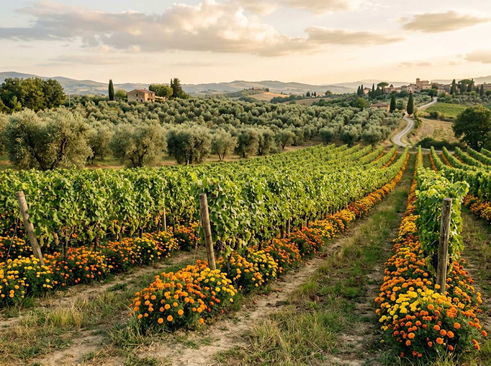
Il Borgo Laudato Si' e il ritorno di Leone XIV.
Cinquantacinque ettari trasformati in centro educativo per l'ecologia integrale nel 2023 da Papa Francesco. Il 5 luglio 2026 Papa Leone XIV è tornato a soggiornare al Palazzo, ripristinando la villeggiatura papale.
Nel 2023, Papa Francesco trasformò i cinquantacinque ettari delle Ville Pontificie in Borgo Laudato Si', un centro educativo dedicato all'ecologia integrale della sua enciclica: agricoltura biologica, orti didattici, frantoio, produzioni casearie, programmi per scuole ([Borgo Laudato Si'](https://borgolaudatosi.va/it/)). Francesco non aveva mai voluto usare Castel Gandolfo come residenza estiva, preferendo Santa Marta in Vaticano. Il 5 luglio 2026 Papa Leone XIV ha ripristinato la tradizione tornando a soggiornare al Palazzo Pontificio, restituendo alla collina la sua funzione di sede pontificia. Quattrocento anni dopo il primo soggiorno di Urbano VIII, un altro Papa fa gli stessi passi sulla stessa terrazza affacciata sul lago. Non è mai solo storia: è continuità visibile.
Un piccolo borgo pontificio con un castello perso per un debito, una cassetta postale del 1820, dodicimila sfollati salvati sotto le sue volte, e duemila anni di storie che non finiscono mai di essere raccontate.
Hai una storia da segnalare?
Se conosci un episodio verificato che dovrebbe essere raccontato qui, scrivi a info@castelgandolfo.eu. Ogni contributo con fonte verificabile è benvenuto.